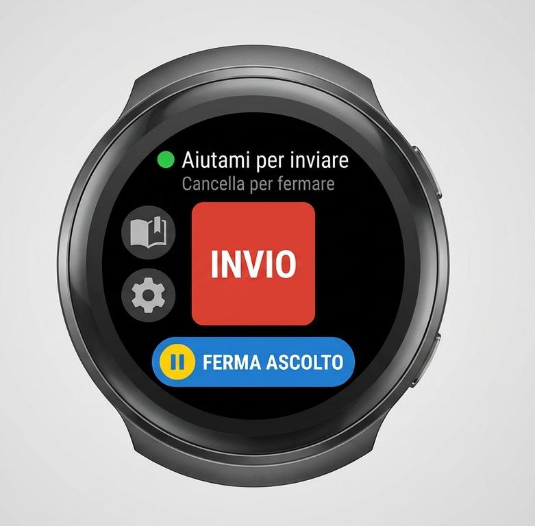
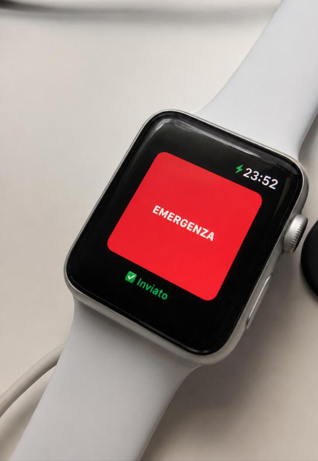

Senza toccare il telefono
Su Android: 4 parole chiave fisse e 3 personali, riconosciute sul dispositivo anche in background o a schermo spento, con il telefono a qualche metro. Su iOS Premium: “Ehi Siri, Proteggimi”.
Il progetto offre diverse modalità di attivazione. Le funzioni disponibili dipendono dall'app, dal dispositivo e dalla configurazione.
Scegli l'app adatta al tuo dispositivo, configura i due contatti di emergenza e abilita le azioni che desideri utilizzare. Se usi il pulsante, completa l'abbinamento.
Prima dell'utilizzoUsa la modalità prevista dalla tua app: comando vocale, tocco sullo schermo, smartwatch compatibile o pulsante fisico associato.
Quando servePartono le azioni abilitate: messaggi con posizione, condivisione live tramite Telegram e telefonate ai contatti configurati.
Verso i tuoi contattiSu Android: 4 parole chiave fisse e 3 personali, riconosciute sul dispositivo anche in background o a schermo spento, con il telefono a qualche metro. Su iOS Premium: “Ehi Siri, Proteggimi”.
Usa il tasto SOS previsto dalla tua versione. Su Android i tasti rapidi della home e la notifica persistente funzionano anche con app chiusa.
Usa voce o pulsante dell'app compatibile. Distingui l'app compagna del telefono dall'app autonoma per Wear OS.
Tieni premuto per un paio di secondi il pulsante collegato al telefono: l'app esegue le azioni impostate. Scopri →
Coordinate GPS, indirizzo e link alla mappa nei messaggi ai contatti. Su iOS richiede Premium e il Comando Rapido Apple.
Invio della posizione e aggiornamento live: 30 minuti su iOS Free, durata configurabile nelle versioni abilitate fino a 24 ore.
Telefonate ai numeri impostati. Su iOS Premium si attivano tramite il Comando Rapido Apple “Proteggimi”.
Disponibile su iOS Premium tramite il Comando Rapido Apple. Non è previsto nelle versioni Android.
Importante Le app avvisano i contatti configurati. Non contattano i servizi pubblici di emergenza e non li sostituiscono: i tuoi contatti, ricevuto l'allarme, possono chiamare le forze dell'ordine con tutte le informazioni e venire in tuo aiuto.

Proteggimi e AI help You hanno un'app compagna per l'orologio abbinato. AIuto SOS watch4help™ è invece la soluzione autonoma, utilizzabile senza smartphone con una connessione adatta ai canali scelti.

L'app compagna può avviare Telegram e posizione anche con iPhone bloccato. Per avviare anche SMS, WhatsApp e telefonata servono Premium, il Comando Rapido configurato e l'app iPhone in primo piano.
Schermate delle app tratte dalla presentazione del progetto.
Una configurazione corretta è parte del funzionamento. Segui sempre il manuale della tua app.
Accetta i termini nell'app, inserisci i numeri di telefono e i chat ID Telegram. Concorda con i contatti come gestire una richiesta.
Scegli i canali di invio, le parole chiave personali e i permessi necessari. Su iOS configura il Comando Rapido “Proteggimi” per le funzioni Premium.
Controlla batteria, connessione, attività in background e abbinamento degli accessori.
Avvisa prima i tuoi contatti, esegui il test e verifica che messaggio e posizione siano arrivati.